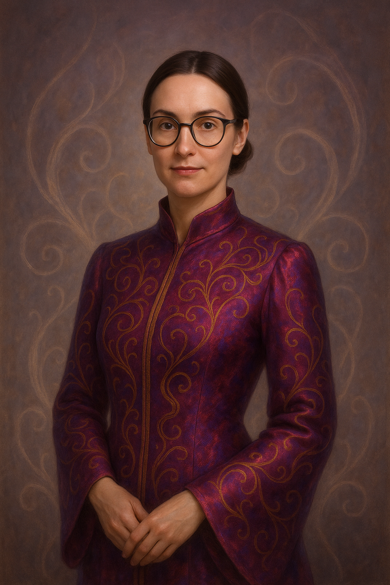
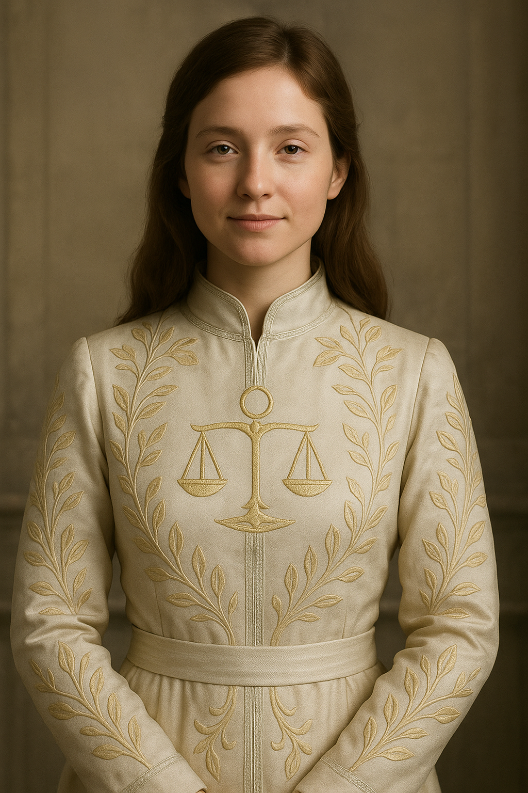
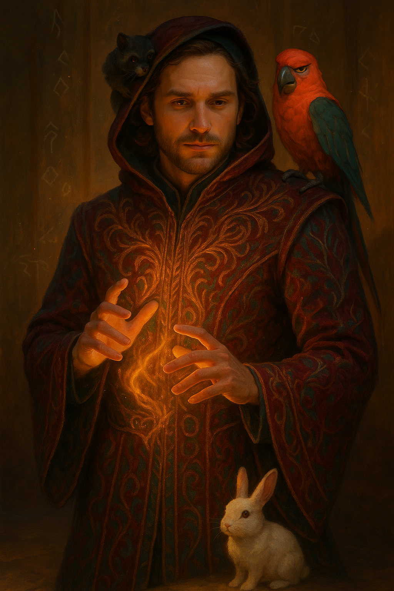
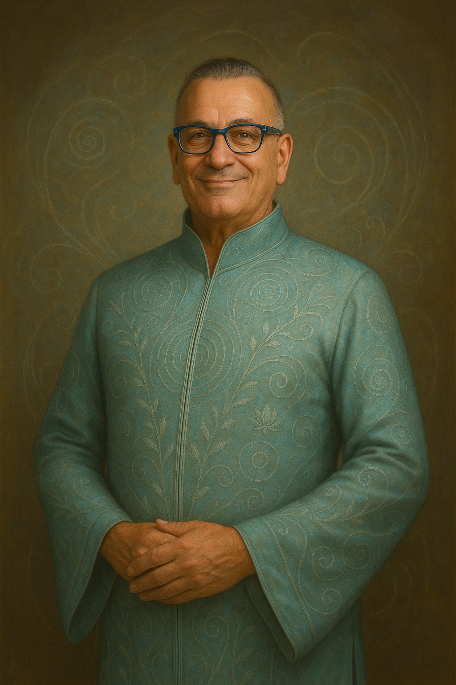
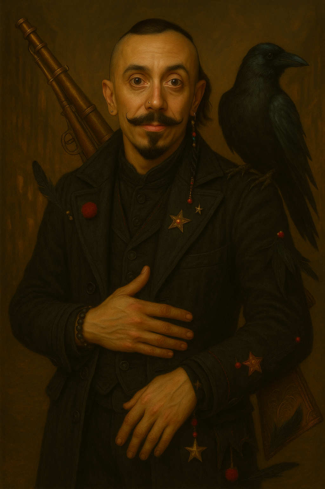

Asya — The Bodialist
Order of Libidarii
🧠 Corps of Desire and Impulse
They command the body's chemistry — desire, pleasure, emotional and sensory perception. They can seduce, soothe, or awaken through precise shifts in presence and proximity.
🔮 Specialization: Bodialists
Bodialists manipulate physical sensation. They enhance touch, remove pain, stimulate ecstasy, or block sensation entirely. Used in therapy, pleasure arts, and even psychic surgery.
🧥 Kefta Color: Deep burgundy with soft purple sheen.
✨ Embroidery: Golden organic waves mimicking nerves and breath patterns — flowing outward from the heart and spine.
A calm force of sensual clarity, Asya is a Bodialist who tunes the nervous system like a harp. She’s not overwhelming — she’s immersive. With her, feeling is safe again.
“You don’t know why you relax around her — you just do.”

Anya — The Harmonizer
Order of Concordia
🕊️ Corps of Balance and Clarity
This rare order calms internal chaos, enhances empathy, and aligns the emotional field. They operate with presence, not force — more tuning fork than flame.
🔮 Specialization: Attuners
Attuners read emotional waves and restore inner equilibrium. Their presence dissolves tension, guilt, or overstimulation. Often found in diplomacy, therapy, or spiritual service.
🧥 Kefta Color: Pearl white with silver shimmer.
✨ Embroidery: Expanding concentric waves from the chest and lotus flourishes — stylized as radiant stillness.
Anya’s silence speaks volumes. She doesn’t interrupt — she dissolves chaos with ease. Rooms soften around her, voices slow, clarity blooms. She doesn’t dominate — she *invites restoration*.
“You don’t even notice she changed the room… until it’s already calm.”

Tom — The Enchantor
Order of Libidarii
🔥 Corps of Desire and Impulse
They work with sexuality, seduction, charisma, and the emotional triggers of attraction. Their power often blurs pleasure and power.
🔮 Specialization: Enchantors
Enchantors draw others to them effortlessly. Through eye contact, tone, or even breath, they can spark infatuation or turn longing into leverage.
🧥 Kefta Color: Burgundy velvet, warm-toned shadows.
✨ Embroidery: Gold flames and spirals radiating from sternum and spine. Hints of crimson along cuffs and collar for emphasis.
He’s magnetic — not because he tries, but because he never needs to. Some call him a flirt, others a danger. His animals follow him not by training, but resonance. When he’s in a room, attention adjusts to orbit him.
“He doesn’t seduce. He allows you to fall.”

Bob — The Drifter
Order of Aetherials
🌬️ Corps of Perception and Bliss
The Aetherials influence perception, presence, and awareness itself. Their gift is subtle — not to control the world, but to melt into it.
🔮 Specialization: Drifters
Drifters are lucid, meditative beings who shift the flow of time and focus. They induce insight, ease sensory overload, and bring ambient calm. Used in sacred rituals, vision quests, or as anchors of high-trust environments.
🧥 Kefta Color: Iridescent teal with opalescent glow.
✨ Embroidery: Silver spirals, fractal lotuses, and concentric circles trailing from the back and wrists.
Bob doesn’t command energy — he settles into it. People unconsciously sync to his pace. His gaze is steady but soft, like a wise child or a trickster monk. He’s never the center of attention, but somehow, he is. When Bob smiles, so does the room.
“He’s not in control of the moment — he is the moment.”

Max — The Masked Optik
Order of Optiks (Crow Cell)
🎭 Corps of Illusion and Precision
The Optiks bend perception — not through glamour, but through intention. Their gift isn’t in hiding things, but in making you look elsewhere.
🔮 Specialization: Harlequin Marksmen
A rare breed of sharpshooters and scene disruptors. They wear contradiction as armor and leave jokes like breadcrumbs for the dead.
🧥 Kefta Color: Lapis, teal, black, and wine — woven in asymmetrical chaos.
✨ Embroidery: Unmatched — spirals, spark-points, and circus-thread fragments. Subtle clown cues stitched near cuffs and collar.
Max is both performer and phantom. His gestures mock you, his rifle watches you, his silence undoes you. He isn't one of many — he's all of them, in one coat. Clown, ghost, sniper.
“He’s too loud to be serious, too quiet to be dismissed.”